Every page holds a piece of someone we love.
Para kay Tito
Isang Alaala na Habang Buhay Naming Dadalhin
Para sa isang taong naging mahalagang bahagi ng aming pamilya. Maaaring hindi na namin marinig ang iyong boses o makita ang iyong ngiti, ngunit ang pagmamahal namin sa iyo ay hindi kailanman matatapos.

Salamat sa mga sandali
Tito, salamat sa bawat sandaling ipinahiram sa amin ng buhay kasama ka. Maaaring noon ay ordinaryong araw lamang ang mga sandaling iyon, ngunit ngayon, ang bawat isa ay napakahalaga. Bawat ngiti, bawat tawanan, bawat simpleng kwento at bawat pagkakataong nakasama ka ay isa nang kayamanang habang buhay naming iingatan.

Hindi namin inakala
Hindi namin alam na pagkatapos mawala ni Lola, darating din ang araw na ikaw naman ang kailangan naming paalamang. Hindi namin inakala na ang mga sandaling kasama ka ay magiging mga alaala na lamang. Sana ay nabigyan pa kami ng mas maraming oras para makasama ka, makausap ka, at maiparamdam sa iyo kung gaano ka namin kamahal. Miss na miss ka na namin, Tito.

Ang puwang na iniwan mo
Hindi mo alam kung gaano kalaki ang puwang na iniwan mo sa aming pamilya. May mga araw na tahimik lamang kami, ngunit sa loob namin ay hinahanap-hanap ka namin. Hinahanap namin ang iyong presensya, ang iyong mga kwento, ang iyong mga ngiti, at ang simpleng pakiramdam na nandiyan ka lamang. Mahal na mahal ka namin, Tito, at hinding-hindi ka namin makakalimutan.

Mga alaala
May mga alaala talagang kahit ilang taon pa ang lumipas ay mananatiling malinaw. Ang mga tawanan, kwentuhan, simpleng pagsasama at mga sandaling hindi namin pinansin noon ay ngayon ang mga bagay na pinakamamahal naming balikan. Salamat dahil naging bahagi ka ng aming buhay. Salamat dahil naging bahagi ka ng aming pamilya.

Kung maaari lang bumalik
Kung maaari lamang sanang bumalik sa nakaraan kahit saglit, pipiliin naming balikan ang mga araw na kasama ka. Hindi para baguhin ang anumang nangyari, kundi para muli naming maramdaman ang saya ng pagkakaroon ka sa aming tabi. Kung alam lang namin na darating ang araw na magiging alaala ka na lamang, mas marami sana kaming oras na inilaan para sabihin kung gaano ka kahalaga sa amin.

Maraming salamat
Maraming salamat, Tito. Salamat sa lahat ng pagmamahal, kabutihan, tulong, kwento, tawanan at mga sandaling ibinahagi mo sa amin. Hindi man namin nasabi ang lahat habang narito ka pa, sana ay alam mong mahal na mahal ka namin. Ang lahat ng iniwan mong alaala ay dadalhin namin saan man kami mapunta.

Hindi ka namin nakakalimutan
Nasaan ka man ngayon, gusto naming malaman mo na hindi ka namin nakakalimutan. May lugar ka pa rin sa aming mga kwento, sa aming mga pag-uusap, at higit sa lahat, sa aming mga puso. Kapag nami-miss ka namin, babalikan namin ang mga larawan at alaala mo. At sa bawat pag-alala namin sa iyo, muli naming mararamdaman ang pagmamahal na hindi kayang kunin ng kamatayan.

Bawat larawan ay may kwento
Bawat larawan ay may sariling kwento. Sa larawang ito, muli naming nakikita ang isang bahagi ng buhay mo na ayaw naming mawala sa aming mga alaala. Salamat sa mga panahong naging bahagi ka ng aming buhay. Kahit lumipas ang panahon, mananatiling mahalaga sa amin ang bawat larawan at bawat kwento tungkol sa iyo.

Isang bahagi ng nakaraan
Ang lumang larawang ito ay isang munting bahagi ng nakaraan na habang buhay naming iingatan. Kapag tinitingnan namin ang larawan mo, hindi lang ang itsura mo ang nakikita namin kundi ang isang taong minahal namin at naging bahagi ng aming pamilya. Napakaraming taon man ang lumipas, ang alaala mo ay mananatiling buhay sa aming mga puso. Miss na miss ka namin, Tito.

Ang alaala sa Mindoro
Ang larawan mong ito na may suot na salamin sa Mindoro ay isa na namang alaala na espesyal sa amin. Sa tuwing tinitingnan namin ito, naaalala namin ang panahon, ang lugar, at ang sandaling kasama ka pa namin. Sana ay maaari naming balikan kahit isang araw lamang ang mga panahong iyon. Pero kahit hindi na maaari, mananatili sa amin ang larawan at ang kwento sa likod nito. Mahal na mahal ka namin, Tito.
Isang alaala na gumagalaw
Ito ang isa sa mga alaala na maaari naming balikan kapag sobrang nami-miss ka namin. Sa bawat segundo ng video na ito, parang nabibigyan kami ng pagkakataong makita kang muli at maalala ang mga panahong kasama ka pa namin. Hindi man nito maibalik ang nakaraan, sapat na itong paalala na minsan ay nagkaroon kami ng napakagandang alaala kasama ka.
Paalam, Tito
Mahal na Mahal Ka Namin
Hindi namin kailanman gugustuhing maging paalam ang huling salita para sa iyo. Gusto sana naming sabihin na hanggang sa muli. Pagkatapos mawala ni Lola, hindi namin inakala na darating din ang araw na kailangan ka naming paalamang. Napakasakit tanggapin na hindi ka na namin makakasama, ngunit nagpapasalamat kami dahil minsan ay naging bahagi ka ng aming buhay. Salamat sa lahat, Tito. Salamat sa pagmamahal, sa mga alaala, at sa bawat sandaling ibinigay mo sa aming pamilya. Pahinga ka na nang payapa. Huwag kang mag-alala, dahil habang kami ay nabubuhay, mabubuhay rin ang mga alaala mo sa aming mga puso. Miss na miss ka namin. Mahal na mahal ka namin. At hinding-hindi ka namin makakalimutan.
Iyong pamangkin
Para kay Lola
Habang Buhay Ka Naming Mamahalin
Para sa aming Lola, isang taong ang pagmamahal ay hindi kailanman mapapalitan. Ang mga taon ay lilipas, ngunit ang pagmamahal namin sa iyo ay mananatiling buhay sa aming mga puso.
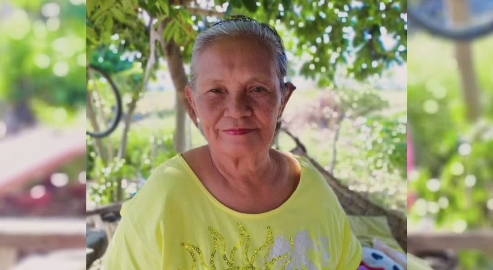
Ang iyong ngiti
Lola, salamat sa pagmamahal na walang hinihinging kapalit. Sa simpleng ngiti mo pa lamang, parang gumagaan na ang paligid. Ang larawan mong ito ay isa sa mga ngiting gusto naming habang buhay na maalala. Salamat sa pag-aalaga, pag-intindi, mga ngiti, mga salita at mga simpleng sandaling nagbigay kulay sa aming buhay.
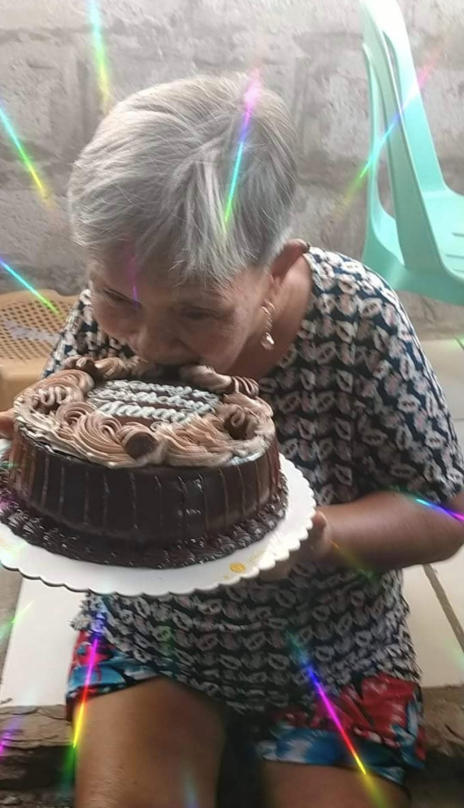
Ang birthday mo
Isa sa mga araw na gusto naming balikan ay ang mga birthday na kasama ka. Sa larawang ito, makikita kang masayang nakikisama at kinakagat ang cake. Maaaring simpleng sandali lamang ito noon, pero ngayon, isa na itong napakahalagang alaala. Sana ay maulit pa namin ang mga ganitong masasayang sandali kasama ka.
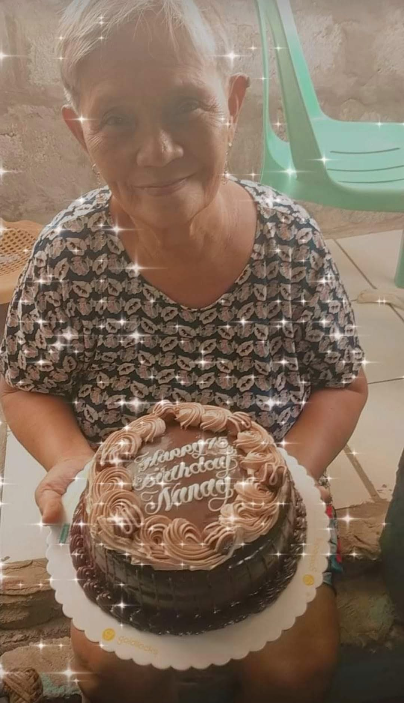
Isang masayang araw
Isa na namang larawan mula sa isang birthday na hindi namin kailanman gustong mawala sa aming mga alaala. Ang saya sa mga ganitong araw ang isa sa mga bagay na gusto naming tandaan tungkol sa iyo. Kahit wala ka na sa tabi namin, ang saya ng mga araw na iyon ay mananatili sa aming puso.
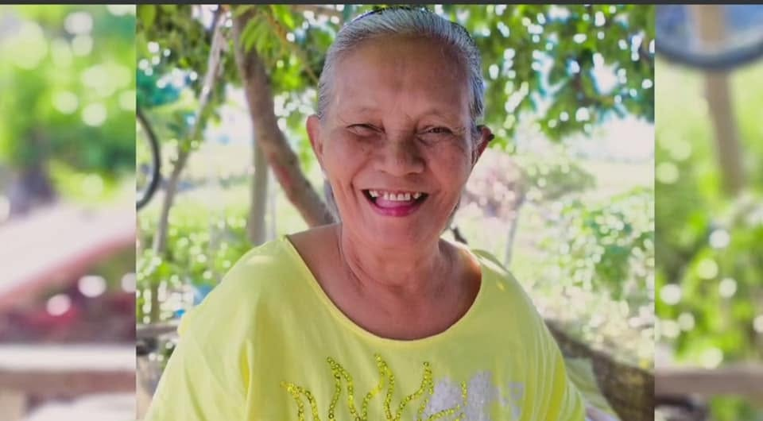
Ang sweet mong ngiti
Isa ito sa mga larawan na kapag tinitingnan namin ay parang naririnig namin ang tawa mo. Ang iyong simpleng pagtawa at sweet na ngiti ay mga bagay na sobrang nami-miss namin. Sana ay maaari naming marinig at makita kang muli kahit saglit lamang. Pero ang larawan mong ito ay mananatili bilang paalala ng saya na dinala mo sa aming buhay.
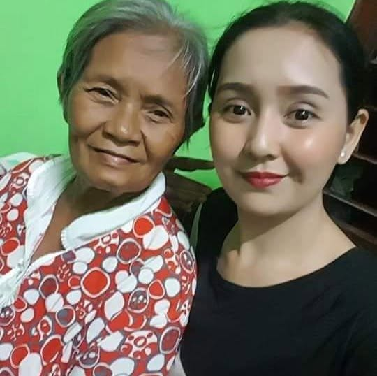
Ikaw at si Mama
Ang larawan mong kasama si Mama ay isa sa mga alaala na espesyal sa amin. Makikita rito ang pagmamahal at connection ng isang ina at anak. Mga sandaling maaaring ordinaryo lamang noon, pero ngayon ay napakahalaga. Ang ganitong mga larawan ang gusto naming panatilihin upang hindi mawala ang mga kwento ng aming pamilya.
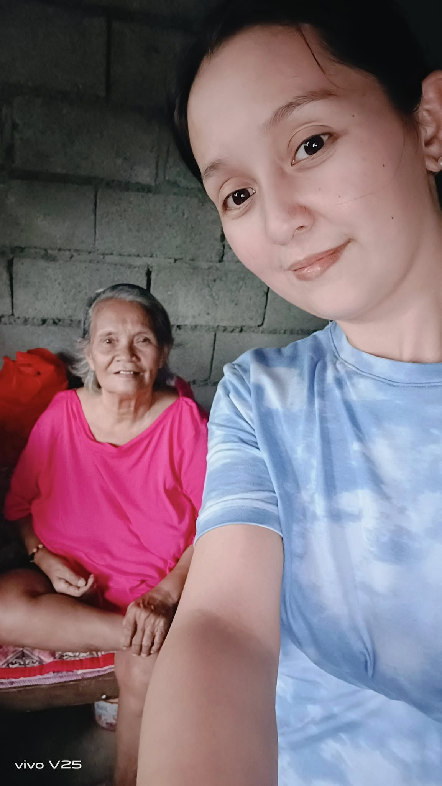
Isa pang sandali ninyong dalawa
Isa pang larawan nina Mama at Lola na gusto naming itago sa aming puso. Bawat larawan ay may kwento, at bawat kwento ay bahagi ng aming pamilya. Kahit lumipas ang panahon, mananatili ang mga sandaling ito bilang patunay ng pagmamahalan at pagsasama na minsan naming naranasan.
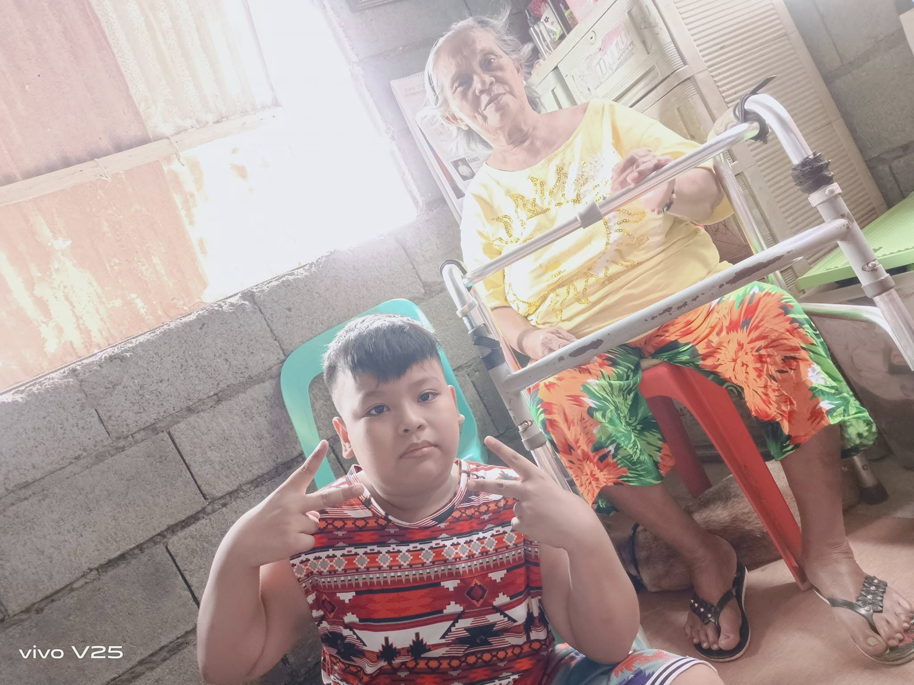
Ako at ikaw, Lola
Isa sa mga larawang gusto kong habang buhay na iingatan ay ang larawan nating dalawa. Salamat dahil naging bahagi ka ng aking buhay. Salamat sa bawat sandaling nakasama kita, sa bawat ngiti, bawat yakap at bawat simpleng bagay na ginawa mong espesyal. Kung maaari lamang bumalik sa nakaraan, pipiliin kong makasama ka muli kahit saglit.
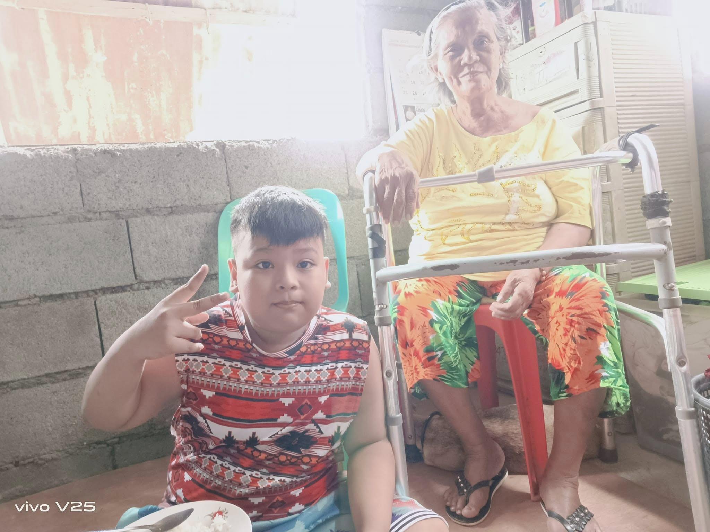
Isang alaala nating dalawa
Ang larawan nating ito ay isa sa mga bagay na babalikan ko kapag sobrang nami-miss kita. Maaaring larawan lamang ito sa ibang tao, pero para sa akin, dala nito ang isang buong kwento at isang sandaling hindi ko na mababalikan. Salamat, Lola, sa pagmamahal na ipinadama mo sa akin.
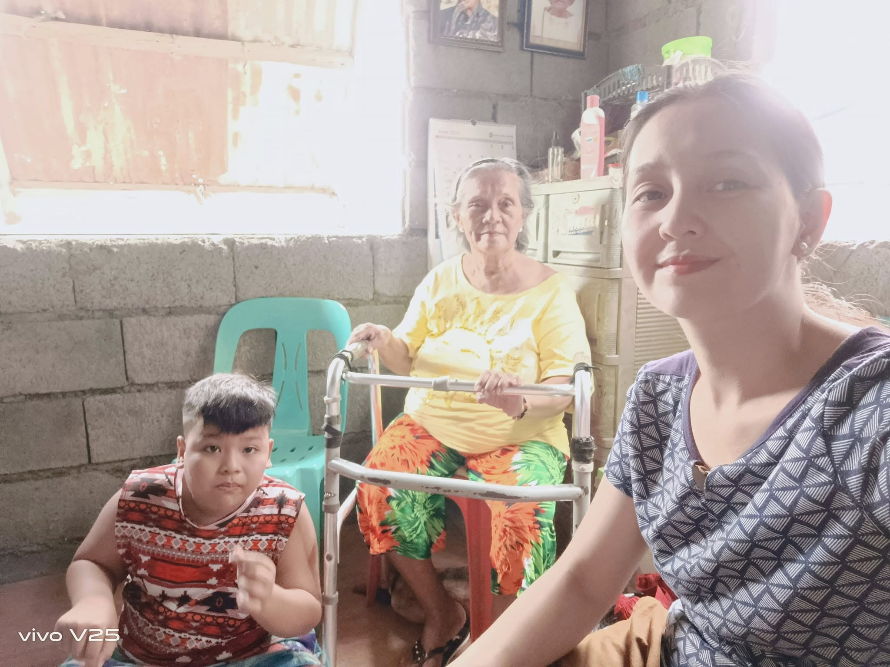
Tayong tatlo
Ang larawan nating tatlo ay isang alaala ng pamilya na habang buhay naming iingatan. Ako, si Mama, at ikaw, Lola. Sa isang simpleng larawan, naroon ang napakaraming pagmamahal, kwento at sandaling hindi na mauulit. Kung gaano kasimple ang larawan, ganoon din kalaki ang halaga nito sa amin.
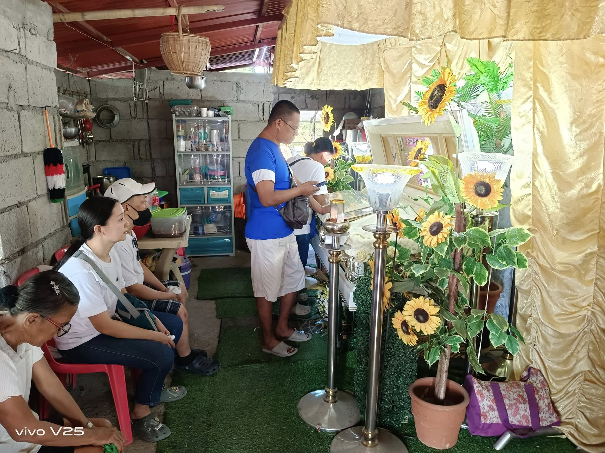
Ang araw na kailangan naming magpaalam
Ito ang isa sa pinakamabigat na araw na hindi namin kailanman makakalimutan. Ang araw na nakita ka namin sa iyong burol at kailangan naming tanggapin na hindi ka na namin makakasama. Naroon din si Tito, nakaupo, kasama namin sa sandaling iyon. Hindi namin alam noon na darating din ang panahon na siya naman ang susunod naming mamimiss. Dalawang taong mahalaga sa aming pamilya, dalawang pagkawala na napakasakit tanggapin.
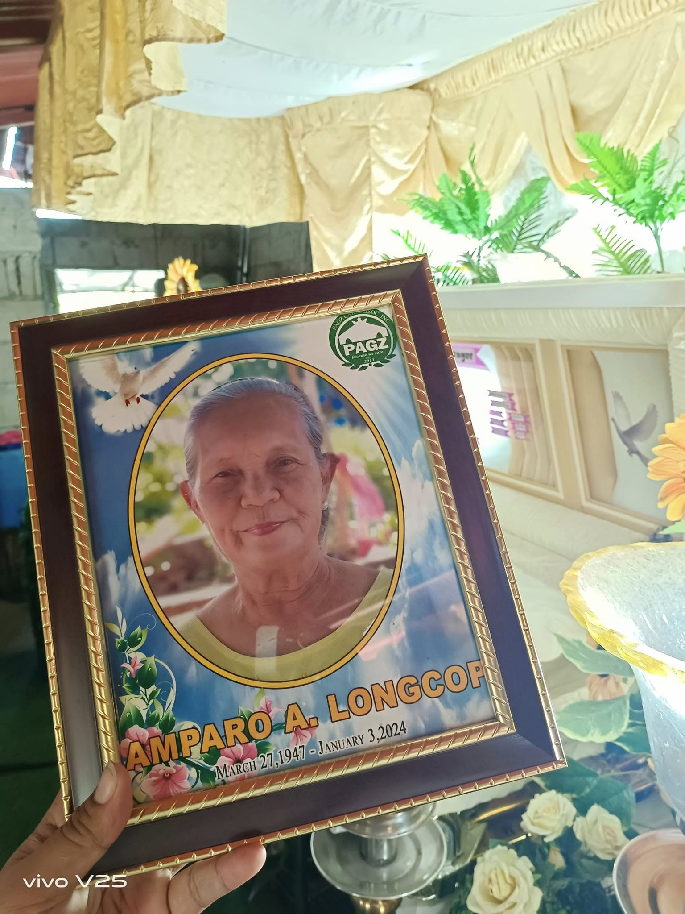
Ang huling sandali
Masakit balikan ang larawang ito, pero ayaw rin naming itago ang bahagi ng kwento mo. Ito ang panahon na kailangan naming harapin ang pagkawala mo. Sa gitna ng lungkot, dala pa rin namin ang pagmamahal namin sa iyo. Ang larawan na ito ay magiging paalala na minahal ka namin nang buong puso at hanggang sa huli, bahagi ka ng aming pamilya.
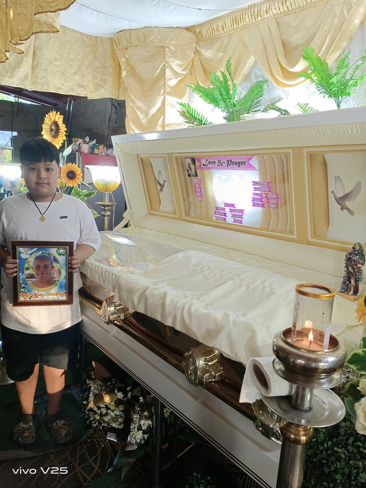
Kahit wala ka na
Ang larawan nating ito ay isang espesyal na alaala dahil kahit wala ka na, gusto pa rin naming magkaroon ng sandaling parang kasama ka namin. Maaaring hindi na kita mayakap at makausap tulad ng dati, pero ang pagmamahal ko sa iyo ay hindi natatapos. Sa puso ko, mananatili kang kasama ko kahit saan ako mapunta.
Isang video ng ating alaala
Kapag nami-miss ka namin, babalikan namin ang mga sandaling tulad nito. Sa bawat segundo ng video, naaalala namin ang panahon na kasama ka pa namin. Hindi nito kayang ibalik ang nakaraan, pero kaya nitong ipaalala sa amin kung gaano kaganda ang mga alaala na iniwan mo.
Paalam, Lola
Habang Buhay Ka Naming Mamahalin
Miss na miss ka namin araw-araw. Miss na rin namin si Tito mula noong Enero 3, 2024. Maraming bagay ang nagbago simula nang mawala kayo, ngunit isang bagay ang hindi kailanman magbabago—ang pagmamahal namin sa inyo. Lola at Tito, maaaring wala na kayo sa aming paningin, ngunit palagi kayong nasa aming mga puso. Sa bawat larawan, bawat kwento, bawat tawanan at bawat alaala, mananatili kayong kasama namin. Salamat sa pagmamahal na iniwan ninyo. Salamat sa buhay na ibinahagi ninyo sa amin. Hinding-hindi namin kayo makakalimutan. Mahal na mahal namin kayo. At kahit gaano pa katagal ang lumipas, palagi namin kayong mamahalin at mamimiss.
Iyong pamangkin